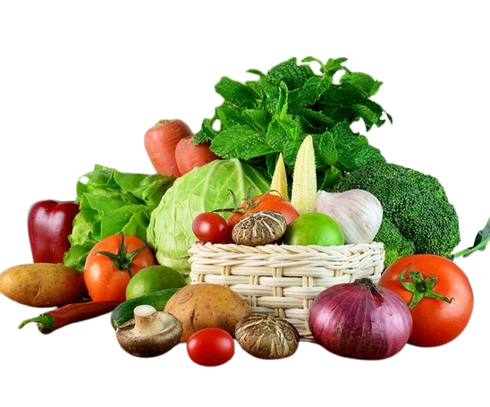

Fresh and Organic
Healthy Living with Fresh Vegetables, We Provide the Best for You!

Garden of Greens sendiri didirikan pada tahun 1985 dan berlokasi di Jl. Bulak Raya No. RT.4 4, RT.2/RW.6, Klender, Kec. Durian Sawit Kota Jakarta Timur Daerah Khusus Ibukota Jakarta 13470. Awalnya ayah saya mengikuti kakek saya untuk berjualan di pasar Klender, kemudian ayah saya mulai berjualan bersama kakek saya untuk mendapatkan modal sendiri, pada tahun 1985 ayah saya menyewa kios sendiri di pasar Brak dan mulai berjualan kacang panjang, mentimun, labu kuning, labu siam dan sayuran lainnya. Bermula dari ayah saya yang mengambil barang di Cikampek, dan sekarang ayah saya yang mengambil barang di Pasar Cibitung.
Jl. Bulak Raya No.RT.4 4, RT.2/RW.6, Klender, Kec. Duren Sawit, Kota Jakarta Timur, Daerah Khusus Ibukota Jakarta 13470
082123057372
18.00 - 05.00